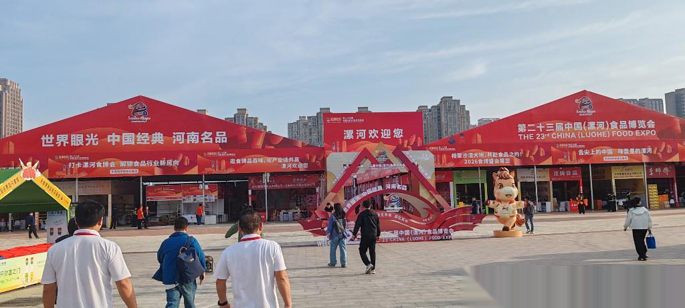
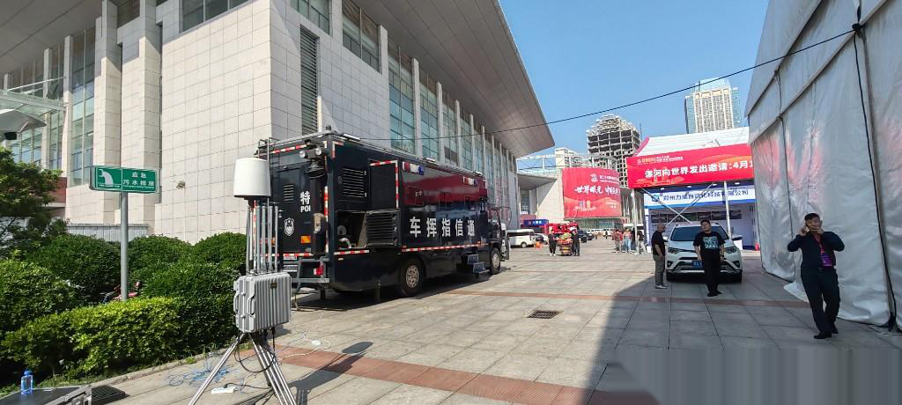
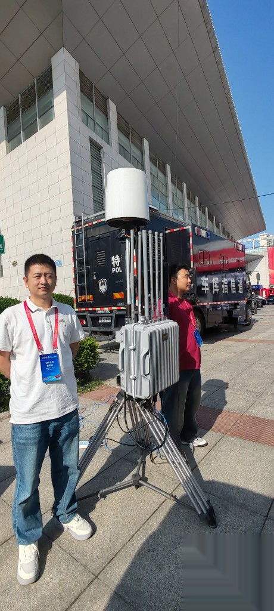
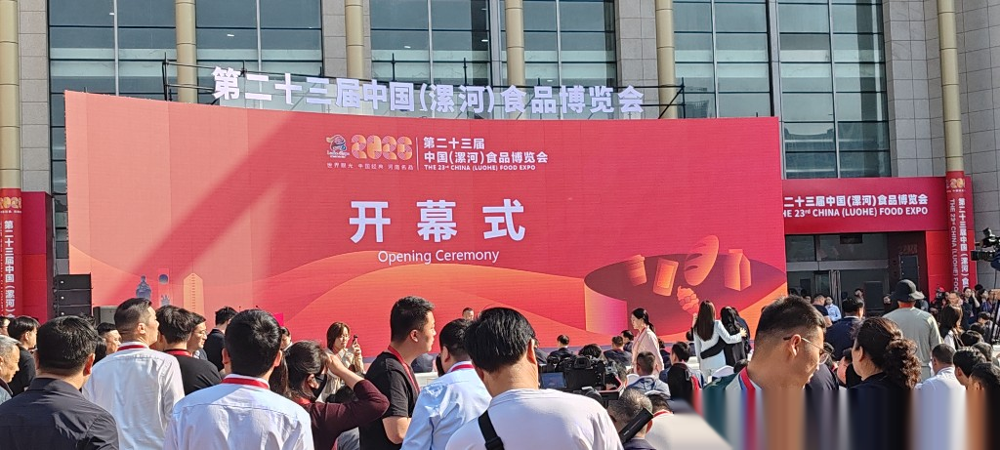

漯河食博会低空安保复盘：车载指挥中枢如何守住人员密集区
导读 本文面向公安及城市低空安全管理部门，以第二十三届中国（漯河）食品博览会低空安保为样本，复盘车载指挥中枢在大型人员密集活动中的部署逻辑与闭环能力。
导语：大型盛会，低空风险跟着人流走
产业博览会、食品展一类活动，地面是进场高峰，天上同样不安静。航拍跟拍、未报备飞行一旦靠近主会场与观众区，处置窗口很短，容错率极低。
会场大不大？人密不密？固定设备跟不跟得上临时主会场？发现之后能不能按等级处置？
第二十三届中国（漯河）食品博览会，给出的答案不是再堆一套永久点位，而是把车载指挥中枢开到主会场，把指挥与感知能力推到人流最集中的地方。

第二十三届中国（漯河）食品博览会 · 主会场外景（实拍）
一 场景挑战：为什么固定部署常常不够用？
大型产业盛会的低空安保，难在三个特点叠加。
• 第一，会场尺度大。主展区、开幕式区域、外围通道同时存在，单点固定设备很难一次盖全。
• 第二，人员高度密集。几万人级活动一旦低空出现异常，影响面大，必须前置感知、快速定级。
• 第三，部署窗口短。展会是阶段性任务，场地与主会场位置可能临时调整，固定建设周期对不上活动节奏。
因此，漯河食博会现场的关键选择是：用可机动的一体化能力，把指挥中心搬到现场。
大型临时活动的低空治理，拼的是机动到位，而不是永久堆点。
二 车载指挥中枢：把指挥能力前推到主会场
食博会的看点，首先是「车载指挥中枢」。
车载一体化系统开到主会场即可展开，相当于把态势汇聚、告警研判、指令协同的能力，前移到活动核心区。相比只依赖远端固定站，现场指挥员能更直接地看见会场上空态势，缩短「发现—研判—下令」的路径。

通信指挥车前推主会场（实拍）
对人员密集区来说，中枢前移的价值很具体：异常目标一旦靠近观众区或开幕式空域，指挥端可以就地完成定级与处置协同，而不是层层回传后再决策。
车载中枢的本质，是让低空指挥跟着风险走。

车载中枢 + 便携探测设备现场展开（实拍）
三 察与控：全时感知，按等级看懂风险
闭环仍然从「察」开始。主会场与人员密集区需要的是全时低空态势感知：持续盯住天上，而不是活动开始后临时抬头看一眼。
「控」则要求把目标与风险分开。合法航拍、媒体跟拍与未报备闯入可能同时存在，必须结合区域敏感度、飞行行为与报备情况做比对，自动或辅助输出处置等级。

开幕式与人员密集区 · 全时值守场景（实拍）
全时感知解决的是「漏不漏」；分级研判解决的是「轻不轻、重不重」。两者合在一起，才不会把所有目标都按最高强度处置，也不会把该管的漏掉。
低空管控在展会现场，关键是不间断地看见，并准确地定级。
四 打与评：分级处置，活动平稳收场
对进入处置阈值的目标，按等级采取提醒、驱离等措施，原则仍是依法、审慎、可控：优先管住风险，避免在人员密集区造成次生混乱。
「评」要求过程可回看。何时发现、如何定级、如何处置、结果如何，能够留痕归档，为下一场大型展会优化预案与车载部署方案。

行业里把这条链概括成「察 · 控 · 打 · 评」。羽嘉科技「猎场一号」警用低空防务智能实战平台，正是支撑这类重大活动现场把感知、研判、处置与复盘串在同一套业务系统里：兼容主流侦测反制设备，按公安业务流程开箱协同。
真正扛得住大型展会的，是能跟着主会场走的闭环能力。
结 固定守点与车载前推，要搭配着用
漯河食博会给出的启示很清楚。
• 第一，人员密集的大型产业活动，低空风险与人流峰值同步出现，必须全时感知。
• 第二，会场大、窗口短时，车载指挥中枢是比「临时加装几个固定点」更贴合节奏的方案。
• 第三，中枢前移之后，仍要把定级、处置、复盘跑成闭环，否则只是把大屏搬到了现场。
城市级常态防控可以靠固定网络；大型展会、临时主会场，则要会用机动力量。两者配合，低空安保才能既守得住重点，又跟得上活动。
—— 关于我们 ——
羽嘉科技，城市级低空安全解决方案提供商，
「猎场一号」警用低空防务智能实战平台研发者。
让低空管理从「被动应对」转向「主动防控」。
免责声明：本文相关信息引自公开交流材料与行业实践复盘，仅供交流参考，不涉及客户内部流程、部署点位与设备数量，不构成任何决策依据。如有侵权请联系删除。
使用说明：浏览器打开可预览。发公众号时按「配图/配图清单.md」上传 00–05（仅漯河）。